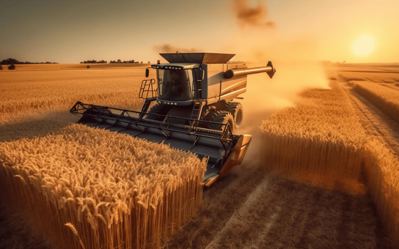
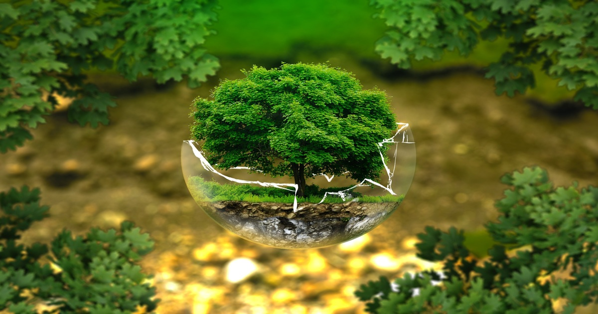
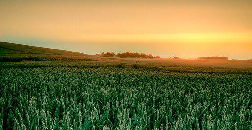

A colheita é uma etapa importante no ciclo agrícola que marca o término do cultivo e o início da utilização de produtos agrícolas. Esse processo desempenha um papel essencial na produção de alimentos e materiais primários para diversos setores.
A PRESERVAÇÃO AMIENTAL é crucial para manter a biodiversidade, garantir serviços essenciais como água limpa e regulação climática, proteger recursos naturais, mitigar mudanças climáticas, promover economias sustentáveis e melhorar a qualidade de vida humana. É essencial para um futuro saudável e equilibrado tanto para o meio ambiente quanto para as sociedades humanas.
Ambiental+

Essas áreas, frequentemente esquecidas ou subvalorizadas nas narrativas urbanas, são fundamentais para a sustentação de qualquer país. Agricultura e pecuária, por exemplo, são apenas algumas das atividades que florescem no campo, sustentando e impulsionando economias ao redor do mundo.